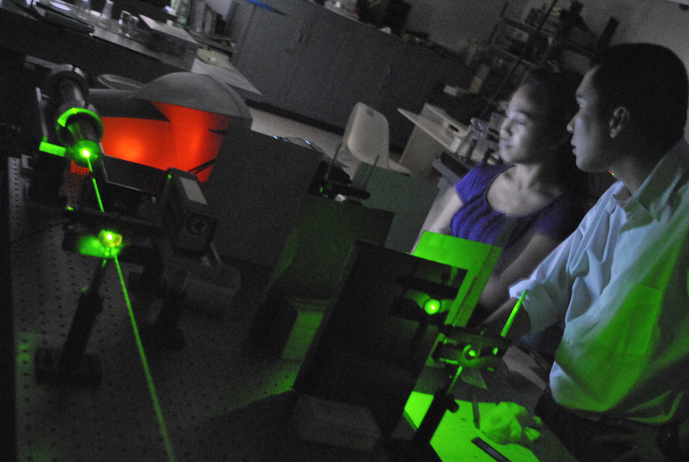
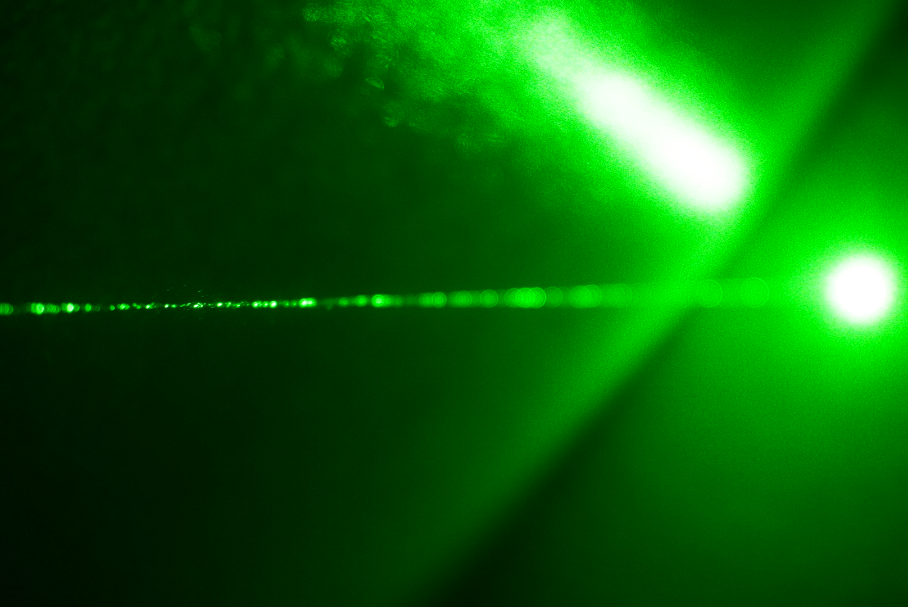
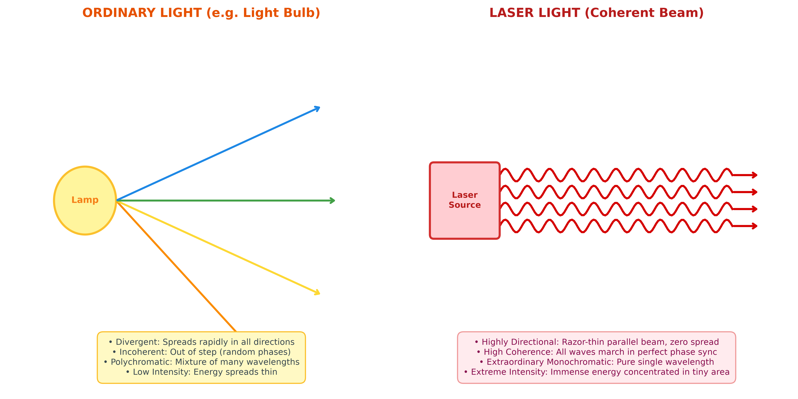
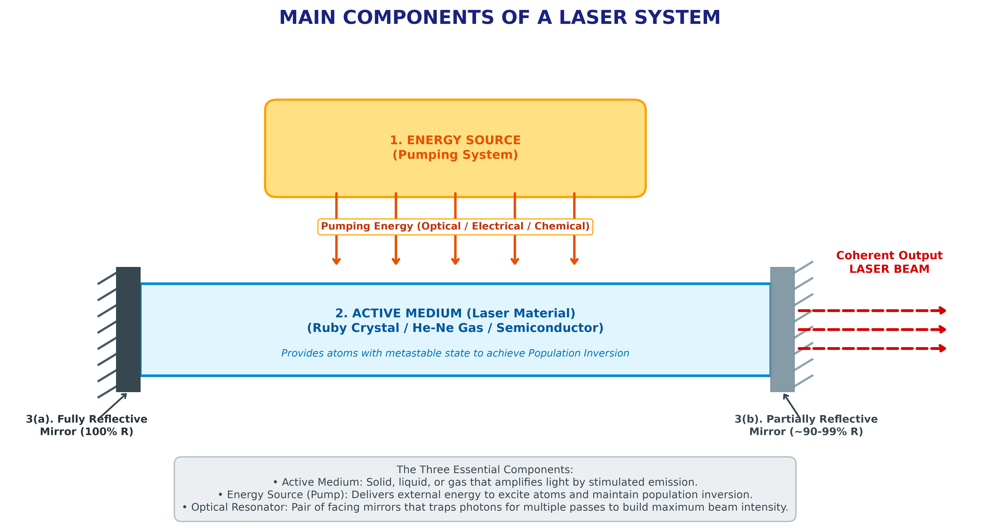
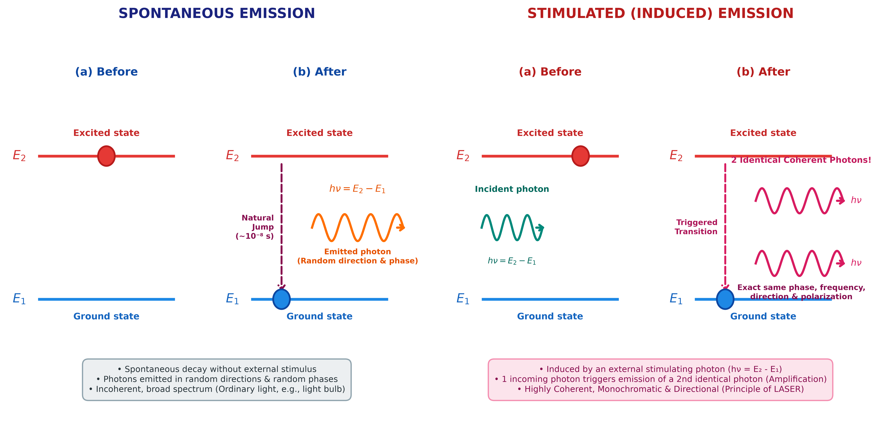
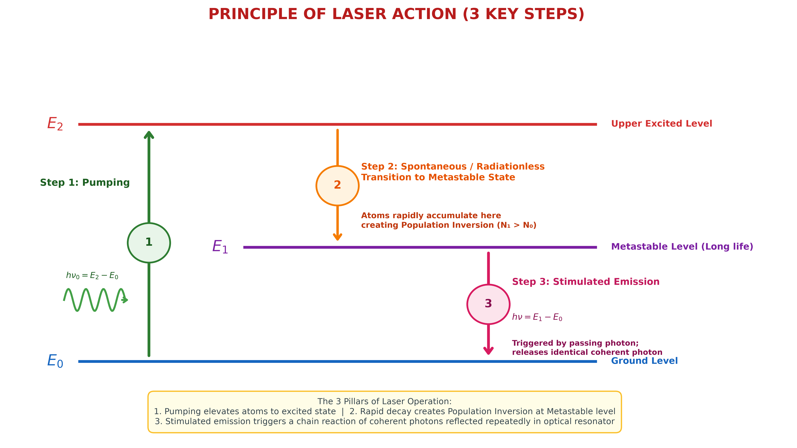
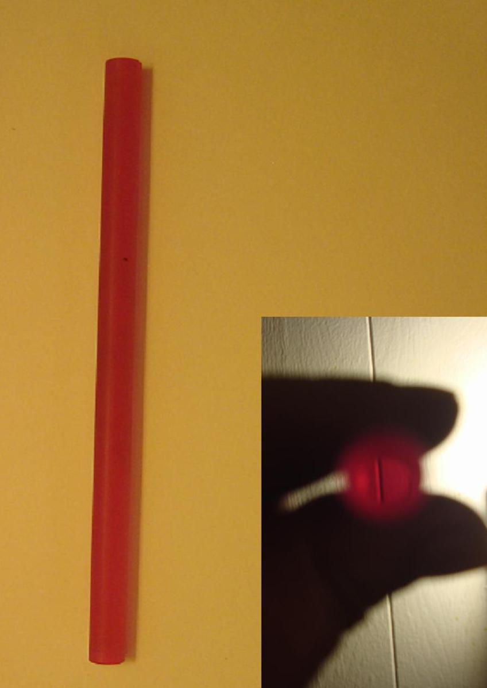
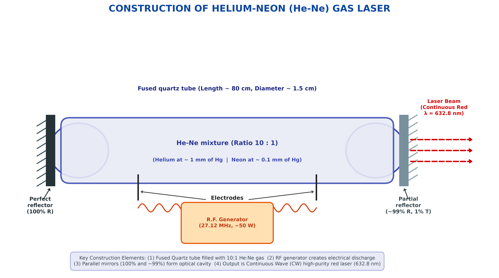
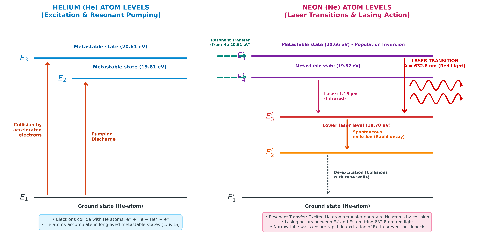

LASERS: Interactive Lecture & Visual Guide
Digitized, animated, and clearly explained in structured bullet points for BSc Physics students and educators. Explore interactive quantum simulations, digitized diagrams, and master laser physics!
- LASER is an acronym for: Light Amplification by Stimulated Emission of Radiation.
- It is a device that generates an extraordinarily intense, highly directional, and single-colored (monochromatic) beam of coherent light.
- Theoretical Prediction: Albert Einstein predicted the theoretical basis of stimulated emission in 1917.
- First Practical Microwave Device: In 1954, Charles H. Townes and co-workers developed the MASER (Microwave Amplification by Stimulated Emission of Radiation).
- First Optical Laser: In 1960, Theodore H. Maiman constructed the first working optical laser using a synthetic Ruby crystal rod, emitting deep red light at wavelength 694.3 nm (6943 Å).
- First Continuous Gas Laser: In 1961, Ali Javan, William Bennett, and Donald Herriot created the Helium-Neon (He-Ne) gas laser, producing continuous red light at 632.8 nm.
Physical Laser Devices in the Laboratory

Modern Physics Laboratory Laser: Coherent, collimated optical laser beam propagated along precision mirror mounts on an optical bench in an active photonics research laboratory.

Extreme Directionality & Coherence: Visible laser beam in air demonstrating razor-thin pencil propagation with near-zero angular divergence across long distances.
- 1. High Degree of Coherence: All emitted light waves possess identical frequency and maintain a constant phase difference over space and time (spatial and temporal coherence). Waves propagate in perfect phase synchronization.
- 2. High Directionality: Ordinary light diverges and radiates in all directions. Laser light propagates in an extremely parallel beam with negligible angular divergence, allowing it to travel immense distances (e.g., Earth to Moon telemetry) with minimal beam spread.
- 3. Extraordinary Monochromaticity: Ordinary light sources emit a broad spectral band containing multiple wavelengths. Laser light exhibits an extremely narrow spectral linewidth (Δλ ≈ 10⁻⁴ Å), producing exceptionally pure single-wavelength radiation.
- 4. Immense Intensity (Brightness): Because laser radiation is concentrated into a narrow, non-diverging beam, immense energy is focused per unit area. Even a low-power milliwatt laser has a localized brightness vastly higher than conventional high-wattage lamps.

- 1. Active Medium (Laser Material): The material (solid, liquid, gas, or semiconductor) containing active quantum centers with suitable metastable energy levels to achieve population inversion.
- 2. Energy Source (Pumping System): An external energy supply (such as optical flash lamps, high-voltage electric discharge, or chemical reactions) that raises atoms from the ground state into higher excited states.
- 3. Optical Resonator (Resonant Cavity): A pair of strictly parallel mirrors bounding the active medium. One mirror is 100% fully reflective and the other is partially reflective (transmitting ~1% to 10%), providing directional feedback and optical amplification.

- When an atom residing in the lower energy ground state (energy E₁) interacts with an electromagnetic photon of frequency ν satisfying hν = E₂ - E₁, it absorbs the incident energy.
- The atom is promoted to the higher excited state (energy E₂). This process is known as Stimulated Absorption.
- The atom cannot remain in this excited state indefinitely; it possesses a natural finite lifetime of approximately 10⁻⁸ seconds.
- Following the natural lifetime of ~10⁻⁸ s, the excited atom drops back to the lower energy state E₁ spontaneously without external stimulation.
- During this transition, it emits a photon carrying energy hν = E₂ - E₁.
- Because atoms in a macroscopic assembly emit independently at random instants, emitted photons possess random directions and random phases.
- The emitted radiation is incoherent, non-directional, and has a broad spectral width (characteristic of conventional thermal sources like incandescent lamps).
- While an atom resides in the excited state E₂, an external incident photon of energy matching hν = E₂ - E₁ interacts with the atom.
- The electromagnetic field of the incident photon induces the excited atom to undergo a downward transition to level E₁ immediately.
- The atom emits a second photon having the identical frequency, phase, direction of propagation, and polarization as the incident triggering photon.
- Both photons emerge in lockstep; their amplitudes add constructively, producing coherent light amplification.
- This phenomenon, established theoretically by Albert Einstein in 1917, is the physical foundation of the LASER.

| Characteristic | Spontaneous Emission | Stimulated Emission |
|---|---|---|
| 1. Triggering Mechanism | Occurs spontaneously after natural lifetime (~10⁻⁸ s) without external radiation. | Induced by an external incident photon of energy matching hν = E₂ - E₁. |
| 2. Direction of Photons | Emitted photons propagate in completely random directions (isotropic). | Emitted photon propagates in the exact same direction as the incident photon. |
| 3. Phase Relationship | Random phase differences between emitted photons (out of step). | Identical phase (coherent lockstep with incident wave). |
| 4. Degree of Coherence | Incoherent radiation. | Highly Coherent radiation. |
| 5. Spectral Nature | Polychromatic / broad spectrum with wide linewidth. | Strictly monochromatic single wavelength radiation. |
| 6. Optical Amplification | No amplification (independent emissions). | Optical Amplification achieved (1 incident photon yields 2 coherent photons). |
| 7. Transition Rate | Rate = A₂₁ · N₂ (proportional solely to population N₂). | Rate = B₂₁ · ρ(ν) · N₂ (proportional to radiation energy density ρ(ν) and N₂). |
- In general atomic systems, an atom excited to an upper level has an extraordinarily brief lifetime of approximately 10⁻⁸ seconds before decaying.
- Because of this immediate decay, atoms cannot build up in ordinary excited states even with continuous energy excitation.
- However, in certain active media and dopant structures, particular energy levels exist where quantum mechanical selection rules forbid rapid spontaneous dipole transitions to lower levels.
- In these unique states, an excited atom remains for an unusually extended period: typically 10⁻³ seconds to 10⁻² seconds.
- This represents a lifetime roughly 100,000 times longer than an ordinary excited level. Such a state is termed a Metastable State.
- Physical Significance: The metastable state functions as an energy reservoir where atoms accumulate in large concentrations, providing the foundation for population inversion.
- Under thermal equilibrium governed by Boltzmann's Distribution Law, the atomic population N₁ in lower energy state E₁ is always significantly greater than the population N₂ in higher state E₂:
N₂ = N₁ · e^(-(E₂ - E₁) / kT) ⟹ N₁ >> N₂ - In this normal equilibrium, any incident radiation is predominantly attenuated through stimulated absorption rather than amplified.
- Definition: The non-equilibrium state in which the atomic population of a specific higher energy level exceeds that of a lower energy level (N₂ > N₁) is defined as Population Inversion.
- A medium or system maintaining population inversion is referred to as an Active System.
- Under population inversion, the rate of stimulated emission surpasses the rate of stimulated absorption, yielding net optical amplification.
- The external energy input mechanism used to transfer atoms from ground levels to excited levels to sustain population inversion is termed Pumping.
- 1. Optical Pumping: Strong light irradiation from external discharge flash lamps excites atoms (utilized in the Ruby Laser).
- 2. Electric Discharge: High-voltage electric fields accelerate electrons which collide inelastically with gas atoms to produce excitation (utilized in the Helium-Neon (He-Ne) Laser).
- 3. Direct Electrical Injection: Forward-biased semiconductor p-n junctions inject minority carriers directly into the recombination zone (utilized in Semiconductor / Diode Lasers).
- 4. Chemical Reaction: Energy released during exothermic molecular chemical reactions directly excites reaction products (utilized in Carbon Dioxide (CO₂) & Chemical Lasers).

- Laser operation requires that the population of the metastable state must exceed that of the lower energy level (Population Inversion).
- Under this condition, stimulated emissions triggered by photons traversing the medium dominate over absorption losses.
- Laser action proceeds systematically through Three Sequential Steps:
- Step 1: Pumping:
External excitation energy is supplied to the medium, pumping atoms from the ground state (E₀) to the higher excited band (E₂) via stimulated absorption of radiation at frequency ν₀ where hν₀ = E₂ - E₀. - Step 2: Population Inversion:
From the short-lived level E₂ (~10⁻⁸ s), atoms undergo rapid spontaneous radiationless transitions to an intermediate metastable state (E₁). Because level E₁ has a prolonged lifetime (~10⁻³ s), atoms accumulate while the ground state E₀ is depleted, establishing N₁ > N₀. - Step 3: Stimulated Emission & Avalanche Amplification:
An initial spontaneously emitted photon of energy hν = E₁ - E₀ traveling along the longitudinal optical axis stimulates an excited atom in E₁ to de-excite, yielding two in-phase coherent photons. These photons trigger further stimulated transitions, initiating a coherent photon cascade.
- The active medium is bounded by two plane-parallel mirrors: a Fully Reflecting Mirror (100% R) and a Partially Reflecting Mirror (~90% to 99% R).
- Directional Selectivity: Photons propagating at oblique angles escape through the lateral boundaries of the cavity. Only photons oriented strictly parallel to the optical axis bounce repeatedly between the mirrors.
- Multi-Pass Amplification: Axial photons traverse the active medium repeatedly, triggering thousands of stimulated transitions and exponentially increasing the optical intensity.
- Laser Threshold Condition: Once optical gain per pass balances internal cavity losses and mirror transmission, laser oscillations stabilize.
- An intense, highly collimated, monochromatic, and coherent beam is transmitted through the partially reflecting mirror as the output LASER BEAM.

• Space Telemetry: Negligible angular divergence permits Earth-Moon and interplanetary laser ranging with millimeter accuracy.
• Underwater Communications: Specific green-blue laser wavelengths penetrate water with minimal absorption.
• High-Speed Interconnects: Optical interconnects enable ultra-fast transfer of entire memory banks between supercomputers at light speed.
• Hard Material Piercing: Blasts precise micro-holes through diamonds, sapphires, ceramics, and hardened alloy steels without mechanical tool wear.
• Bloodless Laser Scalpel: Vaporizes target tissue while simultaneously cauterizing severed blood vessels.
• Oncology: Delivers localized thermal destruction to malignant tumors without damaging adjacent healthy cells.
• Directed Energy Systems: High-energy laser systems configured for defensive interception of missiles and airborne targets.
• Photochemistry: Selectively initiates molecular bond cleavages, catalyzes reactions, and facilitates isotope separation.
• Pollution Monitoring: Measures particulate concentrations, smog distributions, and aerosol density across atmospheric altitudes.
• Security Authentication: Micro-holographic anti-counterfeiting features on identification documents and currency.
- The Ruby Laser was the first operational laser device, developed in 1960 by Theodore H. Maiman.
- It operates as a three-level solid-state pulsed laser. Its construction comprises the following main parts:
- 1. Active Medium (Ruby Rod):
A synthetic cylindrical crystal rod of Corundum / Aluminum Oxide (Al₂O₃) in which approximately 0.05% of the aluminum atoms are substituted by Chromium atoms (Cr₂O₃).
• The active centers generating laser radiation are the trivalent Chromium ions (Cr³⁺), giving the crystal a characteristic pink color.
• Standard rod dimensions are approximately 4 cm in length and 0.5 cm in diameter.
• The end faces are ground strictly flat and polished optically parallel to within fractions of an optical wavelength. - 2. Optical Resonant Cavity:
The two ends of the rod are silvered directly:
• One end face is 100% silvered (fully reflecting mirror).
• The opposing end face is partially silvered (~90% reflection, ~10% transmission) to allow beam emission. - 3. Optical Pumping System:
A Helical Xenon flash discharge tube surrounds the ruby rod.
• Connected to a high-voltage capacitor power supply discharging thousands of joules of electrical energy in millisecond pulses.
• Emits intense green radiation around 5500 Å, coinciding with the strong absorption band of Cr³⁺ ions. - 4. Cooling Jacket:
Because only a modest fraction of the flash energy contributes to optical excitation while the remainder produces thermal heating of the crystal, a double-walled glass tube with circulating cooling water or liquid nitrogen surrounds the assembly.
The Historic Ruby Laser (Theodore Maiman, 1960)

Original 1960 Ruby Laser Components: The actual disassembled apparatus built by Dr. Theodore Maiman at Hughes Research Laboratories, showing the pink synthetic ruby crystal rod, the surrounding helical Xenon flash lamp, and the machined cylindrical reflective casing.

Synthetic Ruby Rod (Al₂O₃ doped with 0.05% Cr³⁺): High optical transparency synthetic corundum crystal rod with polished parallel flat ends, responsible for emitting the 694.3 nm deep-red laser pulses.

- The operation of the ruby laser is described through the 3-Level Quantum Energy Scheme of the Chromium ion (Cr³⁺):
- Step 1: Optical Pumping (Transition 1, E₁ ⟶ E₃):
In the ground level (E₁), Cr³⁺ ions absorb green photons of wavelength 5500 Å produced by the xenon flash, exciting them to the broad absorption band (E₃). - Step 2: Radiationless Non-Radiative Decay (Transition 2, E₃ ⟶ E₂):
Level E₃ has a very short lifetime (~10⁻⁸ s). The excited Cr³⁺ ions decay rapidly to the intermediate Metastable State E₂ by transferring non-radiative vibrational energy directly to the crystal lattice as heat. - Step 3: Establishment of Population Inversion (E₂):
The metastable level E₂ exhibits a prolonged lifetime of approximately 10⁻³ seconds (~100,000 times longer than E₃). Pumping transfers ions into E₂ faster than they can decay, depleting ground level E₁ and producing Population Inversion (N₂ > N₁). - Step 4: Spontaneous Initiation (Transition 3, E₂ ⟶ E₁):
A few Cr³⁺ ions drop spontaneously from E₂ to ground level E₁, emitting fluorescent photons at 6943 Å (694.3 nm, deep red). - Step 5: Stimulated Laser Cascade (Transition 4, E₂ ⟶ E₁):
Photons oriented parallel to the axis reflect back and forth between the mirrored ends, stimulating excited ions in E₂ to emit identical 6943 Å photons in phase. An intense, coherent laser pulse of wavelength 6943 Å bursts through the partially silvered mirror.

- 1. High Pumping Threshold: Because the lower laser level is the ground state (E₁), more than 50% of all chromium ions in the crystal must be excited to achieve population inversion.
- 2. Low Energy Efficiency: Only the green spectral fraction (~5500 Å) of the broad xenon flash is utilized; non-resonant radiation is dissipated as crystal heat.
- 3. Pulsed (Non-Continuous) Output: Emits radiation in short microsecond bursts rather than a continuous beam.
- 4. Thermal Inhomogeneities: Crystal heating causes refractive index variations and requires active cooling.
- The Helium-Neon laser was the first continuous-wave (CW) gas laser, developed in 1961 by Ali Javan, William Bennett, and Donald Herriot.
- It operates as a four-level gas laser system. Its primary components include:
- 1. Fused Quartz Discharge Tube:
A cylindrical tube of fused quartz, approximately 80 cm in length and 1.5 cm in internal diameter, terminating in bulbous end enclosures. - 2. Active Gas Mixture:
The tube contains a gaseous mixture of Helium (He) and Neon (Ne) in an approximate ratio of 10 : 1.
• Helium is maintained at a partial pressure of about 1 mm of Hg.
• Neon is maintained at a partial pressure of about 0.1 mm of Hg (the active lasing center). - 3. Optical Resonator Mirrors:
Two optically flat, dielectric-coated mirrors form the optical cavity:
• One mirror is a Perfect Reflector (100% reflective).
• The opposite mirror is a Partial Reflector (~99% reflective, ~1% transmission) providing continuous beam output. - 4. Pumping / Excitation System:
A High-Frequency Radio Frequency (R.F.) Generator operating in the range of tens of megahertz (MHz) with approximately 50 W input power, connected to external cylindrical electrodes wrapped around the quartz envelope.
Real Helium-Neon (He-Ne) Gas Laser in Operation

Operating He-Ne Discharge Tube: Demonstration at Kastler-Brossel Laboratory (ENS Paris) showing the electrical discharge exciting the 10:1 He-Ne gas mixture, producing the glowing plasma column and emitting the 632.8 nm continuous red laser beam.

Commercial Glass Tube Assembly: Fused quartz capillary tube showing the internal cathode, anode, and precision mirror alignment for continuous wave (CW) operation.

- The operation relies on Resonant Inelastic Collisions between excited Helium atoms and ground-state Neon atoms:
- Step 1: Electron Collision Excitation of Helium:
When the RF electrical discharge is initiated, energetic accelerated electrons collide with ground-state Helium atoms (E₁), pumping them into metastable states E₂ (19.81 eV) and E₃ (20.61 eV).
• Radiative transitions from these levels to the ground state are quantum-forbidden, allowing Helium to accumulate energy as an excitation reservoir. - Step 2: Resonant Energy Transfer to Neon (Collisions of the Second Kind):
The metastable levels of Helium closely match the excitation energies of Neon:
• He level E₃ (20.61 eV) matches Ne level E₅' (20.66 eV) with an energy discrepancy of only ΔE ≈ 0.05 eV.
• He level E₂ (19.81 eV) matches Ne level E₄' (19.82 eV) with an energy discrepancy of only ΔE ≈ 0.01 eV.
• During inelastic collisions, excited Helium atoms transfer energy to ground Neon atoms (E₁'):
He* + Ne ⟶ He (Ground E₁) + Ne* (Excited E₅' / E₄') + ΔE (Kinetic)
• Helium atoms return to ground state E₁, while Neon atoms are pumped into metastable states E₅' and E₄'. - Step 3: Establishment of Population Inversion in Neon:
Levels E₅' and E₄' in Neon have relatively long lifetimes, whereas the lower intermediate level E₃' (18.70 eV) has a very short lifetime. Consequently, Population Inversion is maintained continuously between E₅' and E₃' (and between E₄' and E₃'). - Step 4: Stimulated Laser Transitions:
Stimulated de-excitation from E₅' to E₃' emits coherent photons:
• Main Visible Output (E₅' ⟶ E₃'): Produces the classic continuous red laser radiation at λ = 632.8 nm (6328 Å).
• Infrared transitions at 1.15 μm (E₄' ⟶ E₃') and 3.39 μm (E₅' ⟶ E₄') are suppressed by tuning mirror dielectric reflection bands. - Step 5: Rapid Spontaneous Decay (E₃' ⟶ E₂'):
From level E₃', Neon atoms undergo rapid spontaneous radiative decay down to level E₂' (16.70 eV), emitting incoherent light (~6000 Å). This fast clearance prevents atomic bottlenecking in the lower laser state. - Step 6: De-excitation to Ground State via Wall Collisions (E₂' ⟶ E₁'):
Level E₂' is metastable. Trapped atoms would absorb laser photons and degrade population inversion. To eliminate this, Neon atoms diffuse to the narrow walls of the quartz tube, where wall collisions de-excite them immediately back to ground state E₁'. This necessitates a narrow tube diameter (~1.5 cm).

| Feature / Parameter | Ruby Laser | Helium-Neon (He-Ne) Laser |
|---|---|---|
| Type of Laser | Solid-state crystal laser (3-level) | Gas laser (4-level) |
| Nature of Output Beam | Pulsed output (short microsecond bursts) | Continuous Wave (CW) steady beam |
| Emission Wavelength | 694.3 nm (6943 Å, deep red) | 632.8 nm (6328 Å, bright orange-red) |
| Monochromaticity & Purity | Moderate monochromaticity | Exceptionally high purity and narrow spectral linewidth |
| Pumping Source | Optical pumping (Helical Xenon flash lamp) | Electrical discharge (R.F. generator electron collisions) |
| Power Input Required | Extremely high energy pulses (thousands of joules) | Low power continuous input (~50 Watts) |